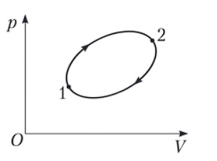
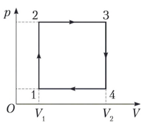
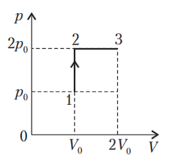
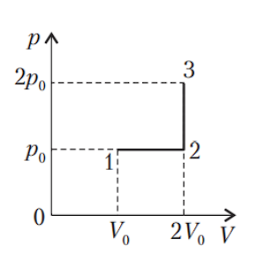
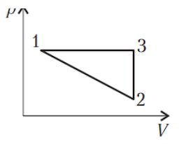

ДЗ
Первое начало термодинамики
Выберите вариант ответа или введите полученное числовое значение.
Задача 1
Если количество теплоты, которое получил идеальный газ, численно равно изменению его внутренней энергии, то газ совершил:
Решение:
Ответ 3
Задача 2
Рабочее тело теплового двигателя совершило круговой процесс, который изображен на рисунке 2.23. Совершенная рабочим телом работа $A$ и изменение его внутренней энергии $\Delta U$ удовлетворяют соотношениям:

Решение:
Работа, совершенная тепловым двигателем, на графике в координатах $(p; V)$ равна площади фигуры, ограниченной кривой цикла, и в данном случае $A > 0$ (цикл протекает по ходу часовой стрелки). Рабочее тело после завершения кругового процесса вернулось в исходное состояние. Следовательно, изменение внутренней энергии газа равно нулю. Правильный ответ третий.
Задача 3
С идеальным газом, количество вещества которого $\nu = 1\text{ моль}$, совершают цикл, состоящий из двух изохор и двух изобар (рис. 2.28). Температуры газа в состояниях 1 и 4 равны $T_1$ и $T_4$. Работа $A$, совершаемая идеальным газом за цикл, равна:

Решение:
Работа газа численно равна площади прямоугольника $1 \to 2 \to 3 \to 4$.
$$A = (p_2 - p_1)(V_2 - V_1) = p_2 V_2 - p_1 V_2 - p_2 V_1 + p_1 V_1.$$
Запишем уравнение Клапейрона — Менделеева для каждого из состояний 1, 2, 3, 4:
$$p_2 V_2 = \nu RT_3;\; p_1 V_2 = \nu RT_4;\; p_2 V_1 = \nu RT_2;\; p_1 V_1 = \nu RT_1.$$
Тогда работа газа $A = \nu R(T_3 - T_2 - T_4 + T_1)$.
Задача 4
Если в процессе изобарного расширения одноатомному идеальному газу сообщили количество теплоты $Q$, то увеличение внутренней энергии $\Delta U$ равно:
Решение:
Согласно первому закону термодинамики теплота $Q$, сообщенная системе, расходуется на изменение внутренней энергии $\Delta U$ газа и работу $A$, совершаемую газом против действия внешних сил:
Изменение внутренней энергии одноатомного идеального газа
$$Q = \Delta U + A.$$
При изобарном процессе работа идеального газа $A = p\Delta V$. Применим уравнение Клапейрона — Менделеева
$$A = p\Delta V = \frac{m}{M}R\Delta T,$$
где $p$ — давление газа; $V$ — объем; $\frac{m}{M} = \nu$ — количество вещества газа; $\Delta T$ — изменение температуры газа.Изменение внутренней энергии одноатомного идеального газа
$$\Delta U = \frac{3}{2}\nu R\Delta T.\text{ Тогда:}$$
$$Q = \frac{3}{2}\nu R\Delta T + \nu R\Delta T = \frac{5}{2}\nu R\Delta T;$$
$$\Delta U = \frac{3}{5}Q = 0,6Q.$$
Задача 5
Объем одноатомного идеального газа при изобарном расширении увеличился на $\Delta V = 2,0\text{ л}$. Если давление газа $p = 200\text{ кПа}$, то в ходе расширения он получил количество теплоты $Q$, равное:
Решение:
Согласно первому закону термодинамики
Для одноатомного идеального газа
Применяя уравнение Клапейрона — Менделеева $p\Delta V = \nu R\Delta T$, получим $\Delta U = \frac{3}{2}p\Delta V$. При изобарном расширении работа газа $A = p\Delta V$. Тогда
$$Q = \Delta U + A,$$
где $\Delta U$ — изменение внутренней энергии газа; $A$ — совершенная газом работа; $Q$ — количество теплоты, сообщенное газу.Для одноатомного идеального газа
$$\Delta U = \frac{3}{2}\nu R\Delta T,$$
где $\Delta T$ — изменение температуры газа; $\nu$ — количество вещества газа.Применяя уравнение Клапейрона — Менделеева $p\Delta V = \nu R\Delta T$, получим $\Delta U = \frac{3}{2}p\Delta V$. При изобарном расширении работа газа $A = p\Delta V$. Тогда
$$Q = \frac{3}{2}p\Delta V + p\Delta V = \frac{5}{2}p\Delta V = \frac{5}{2}\cdot 200\cdot 10^3\text{ Па}\cdot 2,0\cdot 10^{-3}\text{ м}^3 = 1,0\text{ кДж}.$$
Задача 6
Если для изобарного нагревания одноатомного идеального газа в количестве $\nu = 8,00\text{ моль}$ на $\Delta T = 50,0\text{ К}$ газу сообщили некоторое количество теплоты, то газ при этом совершит работу:
Решение:
Ответ: 2) 3,3 кДж. Работа, совершаемая идеальным газом при изобарном процессе, прямо пропорциональна его количеству вещества и изменению температуры.
• Дано:
$\circ$ Количество вещества: $\nu = 8,00\text{ моль}$.
$\circ$ Изменение температуры: $\Delta T = 50,0\text{ К}$.
$\circ$ Универсальная газовая постоянная: $R \approx 8,31\text{ Дж/(моль}\cdot\text{К)}$.
• Формула: Работа газа при постоянном давлении ($p = \text{const}$) вычисляется как $A = p\Delta V = \nu R\Delta T$.
• Расчёт:
• Дано:
$\circ$ Количество вещества: $\nu = 8,00\text{ моль}$.
$\circ$ Изменение температуры: $\Delta T = 50,0\text{ К}$.
$\circ$ Универсальная газовая постоянная: $R \approx 8,31\text{ Дж/(моль}\cdot\text{К)}$.
• Формула: Работа газа при постоянном давлении ($p = \text{const}$) вычисляется как $A = p\Delta V = \nu R\Delta T$.
• Расчёт:
$$A = 8,00 \cdot 8,31 \cdot 50,0 = 3324\text{ Дж} \approx 3,3\text{ кДж}$$
Задача 7
Если температуру воды повысить на $\Delta T = 1,0\text{ К}$, то увеличение внутренней энергии, приходящейся на одну молекулу, составит:
Решение:
Ответ: 2) $1,3 \cdot 10^{-22}\text{ Дж}$. При нагревании жидкости всё переданное ей тепло идёт на увеличение её внутренней энергии, так как тепловым расширением воды при расчётах пренебрегают.
• Дано:
$\circ$ Изменение температуры: $\Delta T = 1,0\text{ К}$.
$\circ$ Удельная теплоёмкость воды: $c = 4200\text{ Дж/(кг}\cdot\text{К)}$.
$\circ$ Молярная масса воды ($\text{H}_2\text{O}$): $M = 18 \cdot 10^{-3}\text{ кг/моль}$.
$\circ$ Постоянная Авогадро: $N_{\text{A}} = 6,02 \cdot 10^{23}\text{ моль}^{-1}$.
• Формула: Изменение внутренней энергии массы воды $m$ равно $\Delta U = cm\Delta T$. Число молекул в этой массе определяется как $N = \frac{m}{M}N_{\text{A}}$. Разделив $\Delta U$ на $N$, получим энергию на одну молекулу:
• Дано:
$\circ$ Изменение температуры: $\Delta T = 1,0\text{ К}$.
$\circ$ Удельная теплоёмкость воды: $c = 4200\text{ Дж/(кг}\cdot\text{К)}$.
$\circ$ Молярная масса воды ($\text{H}_2\text{O}$): $M = 18 \cdot 10^{-3}\text{ кг/моль}$.
$\circ$ Постоянная Авогадро: $N_{\text{A}} = 6,02 \cdot 10^{23}\text{ моль}^{-1}$.
• Формула: Изменение внутренней энергии массы воды $m$ равно $\Delta U = cm\Delta T$. Число молекул в этой массе определяется как $N = \frac{m}{M}N_{\text{A}}$. Разделив $\Delta U$ на $N$, получим энергию на одну молекулу:
$$\Delta U_1 = \frac{\Delta U}{N} = \frac{cM\Delta T}{N_{\text{A}}}$$
$$\Delta U_1 = \frac{4200 \cdot 18 \cdot 10^{-3} \cdot 1,0}{6,02 \cdot 10^{23}} = \frac{75,6}{6,02 \cdot 10^{23}} \approx 1,26 \cdot 10^{-22}\text{ Дж} \approx 1,3 \cdot 10^{-22}\text{ Дж}$$
Задача 8
Если объем гелия массой $m = 160\text{ г}$, температура которого $t = 27,0\text{ }^\circ\text{C}$, при изобарном нагревании увеличивается вдвое, то количество теплоты, необходимое для такого процесса, равно:
Решение:
Ответ: 3) 0,249 МДж. Для одноатомного газа (гелия) при изобарном расширении количество переданной теплоты выражается через изменение температуры.
• Дано:
$\circ$ Масса гелия: $m = 160\text{ г} = 0,160\text{ кг}$.
$\circ$ Молярная масса гелия (He): $M = 4 \cdot 10^{-3}\text{ кг/моль}$.
$\circ$ Начальная температура: $T_1 = 27,0 + 273 = 300\text{ К}$.
$\circ$ Увеличение объёма: $V_2 = 2V_1$.
• Формулы:
1. По закону Гей-Люссака ($p = \text{const}$), при увеличении объёма вдвое абсолютная температура также увеличивается вдвое: $T_2 = 2T_1 = 600\text{ К}$, следовательно, $\Delta T = T_2 - T_1 = 300\text{ К}$.
2. Согласно первому началу термодинамики для изобарного процесса одноатомного газа:
• Дано:
$\circ$ Масса гелия: $m = 160\text{ г} = 0,160\text{ кг}$.
$\circ$ Молярная масса гелия (He): $M = 4 \cdot 10^{-3}\text{ кг/моль}$.
$\circ$ Начальная температура: $T_1 = 27,0 + 273 = 300\text{ К}$.
$\circ$ Увеличение объёма: $V_2 = 2V_1$.
• Формулы:
1. По закону Гей-Люссака ($p = \text{const}$), при увеличении объёма вдвое абсолютная температура также увеличивается вдвое: $T_2 = 2T_1 = 600\text{ К}$, следовательно, $\Delta T = T_2 - T_1 = 300\text{ К}$.
2. Согласно первому началу термодинамики для изобарного процесса одноатомного газа:
$$Q = \Delta U + A = \frac{3}{2}\nu R\Delta T + \nu R\Delta T = \frac{5}{2}\frac{m}{M}R\Delta T$$
$$Q = 2,5 \cdot \frac{0,160}{4 \cdot 10^{-3}} \cdot 8,31 \cdot 300 = 2,5 \cdot 40 \cdot 8,31 \cdot 300 = 249\,300\text{ Дж} \approx 0,249\text{ МДж}$$
Задача 9
Баллон емкостью $V = 50\text{ л}$ содержит аргон под давлением $p = 200\text{ кПа}$. Если аргону сообщить количество теплоты $Q = 3,0\text{ кДж}$, то его давление составит:
Решение:
Ответ: 5) 0,24 МПа. Так как газ находится в жёстком баллоне, процесс его нагревания является изохорным ($V = \text{const}$), и всё подведённое тепло идёт исключительно на увеличение внутренней энергии.
• Дано:
$\circ$ Объём баллона: $V = 50\text{ л} = 0,050\text{ м}^3$.
$\circ$ Начальное давление: $p_1 = 200\text{ кПа} = 2,0 \cdot 10^5\text{ Па}$.
$\circ$ Количество теплоты: $Q = 3,0\text{ кДж} = 3000\text{ Дж}$.
$\circ$ Газ: аргон (одноатомный идеальный газ).
• Формулы:
1. По первому началу термодинамики при $V = \text{const}$ работа газа $A = 0$, поэтому $Q = \Delta U$.
2. Изменение внутренней энергии одноатомного газа связано с изменением давления: $\Delta U = \frac{3}{2}V\Delta p = \frac{3}{2}V(p_2 - p_1)$.
3. Выразим конечное давление $p_2$:
• Дано:
$\circ$ Объём баллона: $V = 50\text{ л} = 0,050\text{ м}^3$.
$\circ$ Начальное давление: $p_1 = 200\text{ кПа} = 2,0 \cdot 10^5\text{ Па}$.
$\circ$ Количество теплоты: $Q = 3,0\text{ кДж} = 3000\text{ Дж}$.
$\circ$ Газ: аргон (одноатомный идеальный газ).
• Формулы:
1. По первому началу термодинамики при $V = \text{const}$ работа газа $A = 0$, поэтому $Q = \Delta U$.
2. Изменение внутренней энергии одноатомного газа связано с изменением давления: $\Delta U = \frac{3}{2}V\Delta p = \frac{3}{2}V(p_2 - p_1)$.
3. Выразим конечное давление $p_2$:
$$p_2 = p_1 + \frac{2Q}{3V}$$
Расчёт:
$$p_2 = 2,0 \cdot 10^5 + \frac{2 \cdot 3000}{3 \cdot 0,050} = 2,0 \cdot 10^5 + \frac{6000}{0,15} = 2,0 \cdot 10^5 + 0,4 \cdot 10^5 = 2,4 \cdot 10^5\text{ Па} = 0,24\text{ МПа}$$
Задача 10
Если объем одноатомного идеального газа увеличился в $n = 3$ раза, а его давление уменьшилось в $k = 1,5$ раза, то внутренняя энергия газа возросла:
Решение:
Ответ: 3) в 2 раза. Внутренняя энергия одноатомного идеального газа прямо пропорциональна произведению его давления на объём.
• Дано:
$\circ$ Увеличение объёма: $V_2 = 3V_1$ ($n = 3$).
$\circ$ Уменьшение давления: $p_2 = \frac{p_1}{1,5}$ ($k = 1,5$).
• Формула: Внутренняя энергия одноатомного газа определяется как $U = \frac{3}{2}\nu RT = \frac{3}{2}pV$. Отношение конечной внутренней энергии к начальной:
• Дано:
$\circ$ Увеличение объёма: $V_2 = 3V_1$ ($n = 3$).
$\circ$ Уменьшение давления: $p_2 = \frac{p_1}{1,5}$ ($k = 1,5$).
• Формула: Внутренняя энергия одноатомного газа определяется как $U = \frac{3}{2}\nu RT = \frac{3}{2}pV$. Отношение конечной внутренней энергии к начальной:
$$\frac{U_2}{U_1} = \frac{p_2 V_2}{p_1 V_1} = \frac{n}{k}$$
• Расчёт:
$$\frac{U_2}{U_1} = \frac{3}{1,5} = 2$$
Задача 11
Чтобы перевести один моль идеального одноатомного газа из состояния 1 (в состоянии 1 температура газа $T_1 = 300\text{ К}$) в состояние 3 (рис. 36.2), необходимо затратить количество теплоты, равное:

Решение:
Ответ: 2) 16,2 кДж. Переход газа из состояния 1 в состояние 3 состоит из двух последовательных участков: изохорного нагревания ($1 \to 2$) и изобарного расширения ($2 \to 3$).
• Дано:
$\circ$ Количество вещества: $\nu = 1\text{ моль}$.
$\circ$ Начальная температура: $T_1 = 300\text{ К}$.
$\circ$ Параметры из графика: $p_1 = p_0, V_1 = V_0;\; p_2 = 2p_0, V_2 = V_0;\; p_3 = 2p_0, V_3 = 2V_0$.
$\circ$ Универсальная газовая постоянная: $R \approx 8,31\text{ Дж/(моль}\cdot\text{К)}$.
• Формулы:
1. По первому началу термодинамики общее количество теплоты равно $Q_{13} = \Delta U_{13} + A_{13}$.
2. Найдём конечную температуру $T_3$ из уравнения состояния идеального газа ($pV = \nu RT$):
• Дано:
$\circ$ Количество вещества: $\nu = 1\text{ моль}$.
$\circ$ Начальная температура: $T_1 = 300\text{ К}$.
$\circ$ Параметры из графика: $p_1 = p_0, V_1 = V_0;\; p_2 = 2p_0, V_2 = V_0;\; p_3 = 2p_0, V_3 = 2V_0$.
$\circ$ Универсальная газовая постоянная: $R \approx 8,31\text{ Дж/(моль}\cdot\text{К)}$.
• Формулы:
1. По первому началу термодинамики общее количество теплоты равно $Q_{13} = \Delta U_{13} + A_{13}$.
2. Найдём конечную температуру $T_3$ из уравнения состояния идеального газа ($pV = \nu RT$):
$$\frac{p_3 V_3}{T_3} = \frac{p_1 V_1}{T_1} \Longrightarrow T_3 = T_1 \cdot \frac{2p_0 \cdot 2V_0}{p_0 \cdot V_0} = 4T_1 = 1200\text{ К}$$
3. Изменение внутренней энергии на всём пути:
$$\Delta U_{13} = \frac{3}{2}\nu R(T_3 - T_1) = \frac{3}{2}\nu R(4T_1 - T_1) = 4,5\nu RT_1$$
4. Работа газа совершается только на участке $2 \to 3$ (площадь под графиком):
$$A_{13} = A_{23} = 2p_0(2V_0 - V_0) = 2p_0 V_0 = 2\nu RT_1$$
5. Сложим обе величины:
$$Q_{13} = 4,5\nu RT_1 + 2\nu RT_1 = 6,5\nu RT_1$$
$$Q_{13} = 6,5 \cdot 1 \cdot 8,31 \cdot 300 = 16\,204,5\text{ Дж} \approx 16,2\text{ кДж}$$
Задача 12
Идеальному газу сообщили количество теплоты $Q = 8\text{ кДж}$. При этом его внутренняя энергия увеличилась на $\Delta U = 14\text{ кДж}$. Работа, которую совершил газ, равна ... кДж.
Решение:
Ответ: -6 кДж. Так как увеличение внутренней энергии превышает полученное газом количество теплоты, работа газа отрицательна (над газом совершили работу внешние силы).
• Дано: $Q = 8\text{ кДж}$, $\Delta U = 14\text{ кДж}$.
• Формула: По первому началу термодинамики $Q = \Delta U + A$, откуда $A = Q - \Delta U$.
• Расчёт:
• Дано: $Q = 8\text{ кДж}$, $\Delta U = 14\text{ кДж}$.
• Формула: По первому началу термодинамики $Q = \Delta U + A$, откуда $A = Q - \Delta U$.
• Расчёт:
$$A = 8 - 14 = -6\text{ кДж}$$
Задача 13
Кислород массой $m = 3\text{ кг}$ при температуре $T = 320\text{ К}$ охладили изохорно. При этом давление кислорода уменьшилось в $n = 3$ раза. Затем газ изобарно расширили так, что температура его стала первоначальной. Изменение внутренней энергии газа составит ... кДж.
Решение:
Ответ: 0 кДж. Внутренняя энергия идеального газа зависит только от его температуры, а в конце процесса температура вернулась к начальному значению.
• Дано: $T_1 = 320\text{ К}$, $T_3 = T_1 = 320\text{ К}$.
• Обоснование: Изменение внутренней энергии определяется разностью конечной и начальной температур: $\Delta U = \frac{i}{2}\nu R(T_3 - T_1)$. Поскольку $T_3 = T_1$, изменение температуры $\Delta T = 0$.
• Расчёт:
• Дано: $T_1 = 320\text{ К}$, $T_3 = T_1 = 320\text{ К}$.
• Обоснование: Изменение внутренней энергии определяется разностью конечной и начальной температур: $\Delta U = \frac{i}{2}\nu R(T_3 - T_1)$. Поскольку $T_3 = T_1$, изменение температуры $\Delta T = 0$.
• Расчёт:
$$\Delta U = 0\text{ кДж}$$
Задача 14
В начальном состоянии температура газа $T_1 = 295\text{ К}$. В конечном состоянии газ занимает объем $V_2 = 1\text{ л}$ при температуре $T_2 = 300\text{ К}$. Если давление $p$ газа в ходе процесса постоянно и равно $300\text{ кПа}$, то работа газа составила ... Дж.
Решение:
Ответ: 5 Дж. При постоянном давлении объём газа прямо пропорционален его абсолютной температуре.
• Дано: $T_1 = 295\text{ К}$, $T_2 = 300\text{ К}$, $V_2 = 1\text{ л} = 10^{-3}\text{ м}^3$, $p = 300\text{ кПа} = 3 \cdot 10^5\text{ Па}$.
• Формулы:
1. По закону Гей-Люссака ($p = \text{const}$) начальный объём равен $V_1 = V_2\frac{T_1}{T_2}$.
2. Работа газа при изобарном расширении:
• Дано: $T_1 = 295\text{ К}$, $T_2 = 300\text{ К}$, $V_2 = 1\text{ л} = 10^{-3}\text{ м}^3$, $p = 300\text{ кПа} = 3 \cdot 10^5\text{ Па}$.
• Формулы:
1. По закону Гей-Люссака ($p = \text{const}$) начальный объём равен $V_1 = V_2\frac{T_1}{T_2}$.
2. Работа газа при изобарном расширении:
$$A = p(V_2 - V_1) = pV_2\left(1 - \frac{T_1}{T_2}\right)$$
• Расчёт:
$$A = 3 \cdot 10^5 \cdot 10^{-3} \cdot \left(1 - \frac{295}{300}\right) = 300 \cdot \frac{5}{300} = 5\text{ Дж}$$
Задача 15
Чтобы перевести один моль идеального одноатомного газа из состояния 1 с температурой $T_1 = 300\text{ К}$ в состояние 3 (рис. 36.3), необходимо затратить количество теплоты, равное ... кДж.

Решение:
Ответ: 13,7 кДж (или 14 кДж при округлении до целого числа для бланка ответов). Переход состоит из изобарного расширения ($1 \to 2$) и изохорного нагревания ($2 \to 3$).
• Дано: $\nu = 1\text{ моль}$, $T_1 = 300\text{ К}$, $R \approx 8,31\text{ Дж/(моль}\cdot\text{К)}$. Из графика: $p_1 = p_0, V_1 = V_0;\; p_3 = 2p_0, V_3 = 2V_0$.
• Формулы:
1. Из уравнения Менделеева — Клапейрона конечная температура
• Дано: $\nu = 1\text{ моль}$, $T_1 = 300\text{ К}$, $R \approx 8,31\text{ Дж/(моль}\cdot\text{К)}$. Из графика: $p_1 = p_0, V_1 = V_0;\; p_3 = 2p_0, V_3 = 2V_0$.
• Формулы:
1. Из уравнения Менделеева — Клапейрона конечная температура
$$T_3 = T_1 \cdot \frac{2p_0 \cdot 2V_0}{p_0 V_0} = 4T_1.$$
2. Изменение внутренней энергии одноатомного газа:
$$\Delta U_{13} = \frac{3}{2}\nu R(T_3 - T_1) = 4,5\nu RT_1.$$
3. Работа совершается только на участке $1 \to 2$:
$$A_{13} = p_0(2V_0 - V_0) = p_0 V_0 = \nu RT_1.$$
4. Количество теплоты:
$$Q_{13} = \Delta U_{13} + A_{13} = 5,5\nu RT_1.$$
$$Q_{13} = 5,5 \cdot 1 \cdot 8,31 \cdot 300 = 13\,711,5\text{ Дж} \approx 13,7\text{ кДж (14 кДж)}$$
Задача 16
В координатах $(p, V)$ график циклического процесса, который совершает идеальный газ, имеет вид прямых, соединяющих точки с координатами $(200\text{ кПа}; 1,0\text{ л})$, $(100\text{ кПа}; 2,0\text{ л})$, $(100\text{ кПа}; 1,0\text{ л})$. Работа, совершенная газом за цикл, равна ... Дж.
Решение:
Ответ: 50 Дж. Работа идеального газа за замкнутый цикл численно равна площади фигуры, ограниченной графиком цикла в координатах $(p, V)$.
• Дано: Координаты вершин треугольника: 1 (200 кПа; 1,0 л), 2 (100 кПа; 2,0 л), 3 (100 кПа; 1,0 л).
• Формулы:
1. График представляет собой прямоугольный треугольник, обход которого идёт по часовой стрелке ($A > 0$).
2. Катеты треугольника: $\Delta p = 200 - 100 = 100\text{ кПа} = 10^5\text{ Па}$ и $\Delta V = 2,0 - 1,0 = 1,0\text{ л} = 10^{-3}\text{ м}^3$.
3. Площадь треугольника:
• Дано: Координаты вершин треугольника: 1 (200 кПа; 1,0 л), 2 (100 кПа; 2,0 л), 3 (100 кПа; 1,0 л).
• Формулы:
1. График представляет собой прямоугольный треугольник, обход которого идёт по часовой стрелке ($A > 0$).
2. Катеты треугольника: $\Delta p = 200 - 100 = 100\text{ кПа} = 10^5\text{ Па}$ и $\Delta V = 2,0 - 1,0 = 1,0\text{ л} = 10^{-3}\text{ м}^3$.
3. Площадь треугольника:
$$A = \frac{1}{2}\Delta p \cdot \Delta V$$
$$A = \frac{1}{2} \cdot 10^5 \cdot 10^{-3} = 50\text{ Дж}$$
Задача 17
Один моль идеального одноатомного газа совершает процесс, при котором давление растет пропорционально объему по закону $p = \alpha V$. Если газу сообщить количество теплоты $Q = 33,2\text{ Дж}$, то его температура изменится на ... К.
Решение:
• Дано:
$\circ$ Количество вещества: $\nu = 1\text{ моль}$.
$\circ$ Газ: идеальный одноатомный ($i = 3$).
$\circ$ Закон процесса: $p = \alpha V$.
$\circ$ Количество теплоты: $Q = 33,2\text{ Дж}$.
$\circ$ Универсальная газовая постоянная: $R = 8,3\text{ Дж/(моль}\cdot\text{К)}$ (стандартное табличное значение в тестах ЦТ/ЦЭ).
• 1. Выразим работу газа $A$:
График зависимости $p(V)$ представляет собой отрезок прямой, продолжение которого проходит через начало координат. Работа газа численно равна площади трапеции под этим отрезком:
• 2. Применим первое начало термодинамики:
Для одноатомного газа изменение внутренней энергии равно $\Delta U = \frac{3}{2}\nu R\Delta T$.
Сложим $\Delta U$ и работу $A$:
$\circ$ Количество вещества: $\nu = 1\text{ моль}$.
$\circ$ Газ: идеальный одноатомный ($i = 3$).
$\circ$ Закон процесса: $p = \alpha V$.
$\circ$ Количество теплоты: $Q = 33,2\text{ Дж}$.
$\circ$ Универсальная газовая постоянная: $R = 8,3\text{ Дж/(моль}\cdot\text{К)}$ (стандартное табличное значение в тестах ЦТ/ЦЭ).
• 1. Выразим работу газа $A$:
График зависимости $p(V)$ представляет собой отрезок прямой, продолжение которого проходит через начало координат. Работа газа численно равна площади трапеции под этим отрезком:
$$A = \frac{p_1 + p_2}{2}(V_2 - V_1) = \frac{1}{2}(p_2 V_2 - p_1 V_1 + p_1 V_2 - p_2 V_1)$$
Так как $p_1 = \alpha V_1$ и $p_2 = \alpha V_2$, выполняется равенство $p_1 V_2 = \alpha V_1 V_2 = p_2 V_1$, и эти слагаемые взаимно уничтожаются. Подставляя уравнение Менделеева — Клапейрона ($pV = \nu RT$), получаем:
$$A = \frac{1}{2}(p_2 V_2 - p_1 V_1) = \frac{1}{2}\nu R(T_2 - T_1) = \frac{1}{2}\nu R\Delta T$$
На графике заштрихованная область под прямой $p = \alpha V$ наглядно показывает, что работа газа при переходе из состояния 1 в состояние 2 равна площади прямоугольной трапеции.• 2. Применим первое начало термодинамики:
Для одноатомного газа изменение внутренней энергии равно $\Delta U = \frac{3}{2}\nu R\Delta T$.
Сложим $\Delta U$ и работу $A$:
$$Q = \Delta U + A = \frac{3}{2}\nu R\Delta T + \frac{1}{2}\nu R\Delta T = 2\nu R\Delta T$$
• 3. Вычислим изменение температуры $\Delta T$:
$$\Delta T = \frac{Q}{2\nu R} = \frac{33,2}{2 \cdot 1 \cdot 8,3} = \frac{33,2}{16,6} = 2\text{ К}$$
Задача 18
Над идеальным газом совершена работа $A = 10\text{ кДж}$. При этом газ отдал количество теплоты $Q = 6\text{ кДж}$. Внутренняя энергия газа изменилась на ... кДж.
Решение:
Ответ: 4 кДж. Внутренняя энергия газа увеличилась на 4 кДж, так как совершённая над ним работа превышает количество отданного тепла.
• Дано:
$\circ$ Работа внешних сил над газом: $A' = 10\text{ кДж}$ (работа самого газа $A = -10\text{ кДж}$).
$\circ$ Отданное газом количество теплоты: $Q = -6\text{ кДж}$.
• Формула: По первому началу термодинамики $Q = \Delta U + A$, откуда $\Delta U = Q - A = Q + A'$.
• Расчёт:
• Дано:
$\circ$ Работа внешних сил над газом: $A' = 10\text{ кДж}$ (работа самого газа $A = -10\text{ кДж}$).
$\circ$ Отданное газом количество теплоты: $Q = -6\text{ кДж}$.
• Формула: По первому началу термодинамики $Q = \Delta U + A$, откуда $\Delta U = Q - A = Q + A'$.
• Расчёт:
$$\Delta U = -6 + 10 = 4\text{ кДж}$$
Задача 19
В ходе изотермического расширения при увеличении объема от $V_1 = 0,50\text{ л}$ до $V_2 = 0,70\text{ л}$ газу сообщили количество теплоты $Q = 30\text{ Дж}$. Если при дальнейшем изотермическом расширении газ совершил работу $A = 10\text{ Дж}$, то работа газа в ходе всего процесса составила ... Дж.
Решение:
Ответ: 40 Дж. При изотермическом процессе ($T = \text{const}$) внутренняя энергия идеального газа не изменяется, поэтому всё подведённое тепло идёт на совершение работы.
• Дано:
$\circ$ Количество теплоты на первом участке: $Q_1 = 30\text{ Дж}$.
$\circ$ Работа на втором участке: $A_2 = 10\text{ Дж}$.
• Формулы:
1. На первом участке $\Delta U_1 = 0$, следовательно, работа газа $A_1 = Q_1 = 30\text{ Дж}$.
2. Полная работа за весь процесс равна сумме работ на обоих участках: $A_{\text{общ}} = A_1 + A_2$.
• Расчёт:
• Дано:
$\circ$ Количество теплоты на первом участке: $Q_1 = 30\text{ Дж}$.
$\circ$ Работа на втором участке: $A_2 = 10\text{ Дж}$.
• Формулы:
1. На первом участке $\Delta U_1 = 0$, следовательно, работа газа $A_1 = Q_1 = 30\text{ Дж}$.
2. Полная работа за весь процесс равна сумме работ на обоих участках: $A_{\text{общ}} = A_1 + A_2$.
• Расчёт:
$$A_{\text{общ}} = 30 + 10 = 40\text{ Дж}$$
Задача 20
Один моль одноатомного идеального газа совершает процесс $1-2-3-1$, приведенный на рисунке 36.5. Температура газа в состояниях 1 и 2 $T = 300\text{ К}$. Объем $V_3 = 2,5V_1$. Количество теплоты, которое получил газ на участке $2-3$, равно ... кДж.

Решение:
Ответ: 5,61 кДж (или 5,6 кДж). Участок $2 \to 3$ на графике соответствует изохорному нагреванию газа ($V = \text{const}$), поэтому всё полученное тепло расходуется только на увеличение внутренней энергии.
• Дано:
$\circ$ Количество вещества: $\nu = 1\text{ моль}$.
$\circ$ Температура в состояниях 1 и 2: $T_1 = T_2 = 300\text{ К}$.
$\circ$ Объёмы из графика: $V_2 = V_3 = 2,5V_1$.
$\circ$ Универсальная газовая постоянная: $R = 8,31\text{ Дж/(моль}\cdot\text{К)}$.
• Формулы:
• Участок $1 \to 3$ представляет собой изобарное расширение ($p_1 = p_3$). По закону Гей-Люссака:
• Дано:
$\circ$ Количество вещества: $\nu = 1\text{ моль}$.
$\circ$ Температура в состояниях 1 и 2: $T_1 = T_2 = 300\text{ К}$.
$\circ$ Объёмы из графика: $V_2 = V_3 = 2,5V_1$.
$\circ$ Универсальная газовая постоянная: $R = 8,31\text{ Дж/(моль}\cdot\text{К)}$.
• Формулы:
• Участок $1 \to 3$ представляет собой изобарное расширение ($p_1 = p_3$). По закону Гей-Люссака:
$$\frac{V_3}{T_3} = \frac{V_1}{T_1} \Longrightarrow T_3 = T_1 \frac{V_3}{V_1} = 300 \cdot 2,5 = 750\text{ К}$$
• На изохорном участке $2 \to 3$ работа газа $A_{23} = 0$. По первому началу термодинамики:
$$Q_{23} = \Delta U_{23} = \frac{3}{2}\nu R(T_3 - T_2)$$
• Расчёт:
$$Q_{23} = 1,5 \cdot 1 \cdot 8,31 \cdot (750 - 300) = 1,5 \cdot 8,31 \cdot 450 = 5609,25\text{ Дж} \approx 5,61\text{ кДж}$$
Задача 21
Идеальный газ в количестве $\nu = 2,00\text{ моль}$ изобарно расширяют, при этом объем газа увеличивается в $n = 2$ раза. Затем газ изохорно охлаждают до первоначальной температуры. Если работа, совершенная газом, при этом $A = 4,15\text{ кДж}$, то максимальное значение температуры газа в данном процессе составило ... К.
Решение:
Дано:
$\circ$ Количество вещества: $\nu = 2,00\text{ моль}$.
$\circ$ Увеличение объёма при изобарном расширении: $V_2 = 2V_1$ ($n = 2$).
$\circ$ Полная работа газа за процесс: $A = 4,15\text{ кДж} = 4150\text{ Дж}$.
$\circ$ Универсальная газовая постоянная: $R = 8,3\text{ Дж/(моль}\cdot\text{К)}$ (табличное значение для белорусских тестов ЦТ/ЦЭ).
1. Определим работу на каждом участке:
$\circ$ На первом участке ($1 \to 2$) газ изобарно расширяется ($p = \text{const}$), совершая работу $A_{12} = p(V_2 - V_1) = p(2V_1 - V_1) = pV_1$.
$\circ$ На втором участке ($2 \to 3$) газ изохорно охлаждается ($V = \text{const}$), поэтому работа на этом этапе равна нулю: $A_{23} = 0$.
$\circ$ Следовательно, вся совершённая газом работа равна работе на первом участке: $A = A_{12} = pV_1$.
2. Найдём начальную температуру $T_1$:
По уравнению Менделеева — Клапейрона для начального состояния $pV_1 = \nu RT_1$. Подставляя вместо $pV_1$ работу $A$, получаем:
Температура газа растёт на участке $1 \to 2$ и достигает максимума в состоянии 2 ($T_{\max} = T_2$). По закону Гей-Люссака при постоянном давлении абсолютная температура пропорциональна объёму:
$\circ$ Количество вещества: $\nu = 2,00\text{ моль}$.
$\circ$ Увеличение объёма при изобарном расширении: $V_2 = 2V_1$ ($n = 2$).
$\circ$ Полная работа газа за процесс: $A = 4,15\text{ кДж} = 4150\text{ Дж}$.
$\circ$ Универсальная газовая постоянная: $R = 8,3\text{ Дж/(моль}\cdot\text{К)}$ (табличное значение для белорусских тестов ЦТ/ЦЭ).
1. Определим работу на каждом участке:
$\circ$ На первом участке ($1 \to 2$) газ изобарно расширяется ($p = \text{const}$), совершая работу $A_{12} = p(V_2 - V_1) = p(2V_1 - V_1) = pV_1$.
$\circ$ На втором участке ($2 \to 3$) газ изохорно охлаждается ($V = \text{const}$), поэтому работа на этом этапе равна нулю: $A_{23} = 0$.
$\circ$ Следовательно, вся совершённая газом работа равна работе на первом участке: $A = A_{12} = pV_1$.
2. Найдём начальную температуру $T_1$:
По уравнению Менделеева — Клапейрона для начального состояния $pV_1 = \nu RT_1$. Подставляя вместо $pV_1$ работу $A$, получаем:
$$A = \nu RT_1 \Longrightarrow T_1 = \frac{A}{\nu R}$$
$$T_1 = \frac{4150}{2,00 \cdot 8,3} = \frac{4150}{16,6} = 250\text{ К}$$
3. Вычислим максимальную температуру $T_{\max}$:Температура газа растёт на участке $1 \to 2$ и достигает максимума в состоянии 2 ($T_{\max} = T_2$). По закону Гей-Люссака при постоянном давлении абсолютная температура пропорциональна объёму:
$$\frac{T_2}{T_1} = \frac{V_2}{V_1} = n \Longrightarrow T_{\max} = nT_1$$
$$T_{\max} = 2 \cdot 250 = 500\text{ К}$$